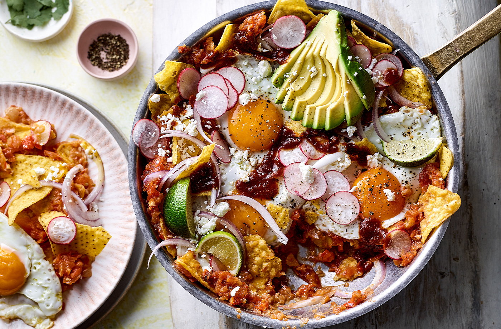

Salsa Roja Chilaquiles

The classic chilaquiles with a little bit of extra spice!
Feed a crowd with this zingy Mexican brunch, packed full of a spicy salsa,
fragrant veggies and crumbly cheese. Grab a tortilla chip and dig in!
Ingredients
- 2 x 500g packs tomatoes on the vine, quartered
- 2 pink (or red) onions, 1 roughly chopped, 1 finely sliced
- 60g pack red chillies, roughly chopped (deseeded, if you like)
- 6 garlic cloves, roughly chopped
- 2 tsp dried oregano
- 2 tsp hot Mexican sauce or other hot sauce, plus extra to serve (optional)
- 3 tbsp vegetable oil
- 2 limes, 1 juiced and 1 cut into wedges
- 8 eggs
- 200g pack lightly salted tortilla chips
- 150g reduced-fat salad cheese, roughly crumbled
- 240g pack radishes, trimmed and finely sliced
- 2 ripe avocados, destoned and sliced
- 30g pack coriander, leaves picked and roughly chopped
Steps
- Tip the tomatoes, chopped onion, chillies, garlic, oregano and hot sauce into a large food processor or blender. Pulse to a fine salsa, taking care not to over blend.
- Heat 1 tbsp oil in a large, wide frying pan over a medium-high heat and add the salsa. Rinse out the food processor jug with 300ml water and add to the salsa in the pan. It will spit and bubble a little at first, so take care. Simmer for 15-20 mins until reduced by about half. Add the lime juice and season.
- Heat the remaining 2 tbsp oil in a medium nonstick frying pan over a medium-high heat. Crack in 4 eggs and fry for 2-3 mins, basting with the oil, until crisp on the bottom with set whites and soft yolks. Transfer to a plate, then repeat with the remaining eggs; cover to keep warm.
- Meanwhile, reserve a large handful of the tortillas to serve, then stir the rest into the salsa and cook for 1-2 mins until warmed through (you want some to soften and some to stay crisp). Either serve the eggs and salsa separately, with the crumbled cheese, radishes, sliced onions and avocados on the side, or pile everything on top of the salsa in the pan and set it in the middle of the table, letting everyone help themselves. Serve with the reserved tortilla chips, the coriander, lime wedges and more hot sauce, if you like.
Back to Main Page